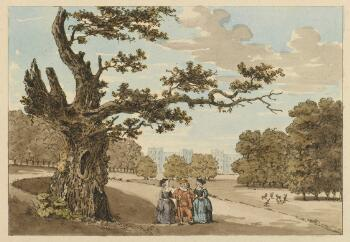
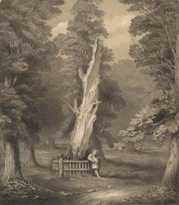
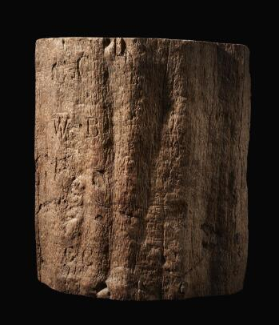
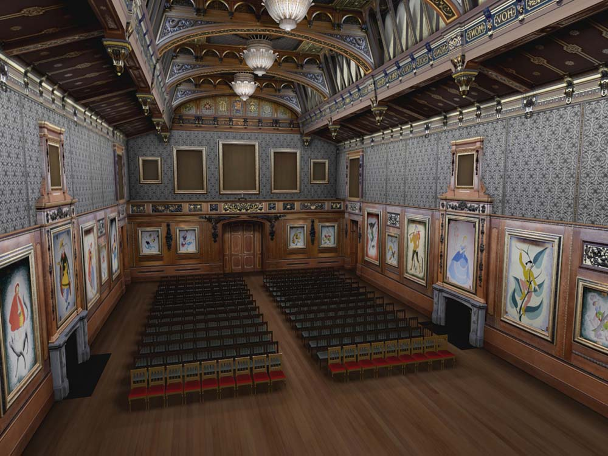

This timeline puts the exhibits in context within royal history as well as the history of Shakespeare's reputation.
Timeline
Shakespeare in the Royal Collection studies the royal family's changing relationship with Shakespeare in the centuries since his death. Shakespeare-related objects have been collected by thirteen generations of the royal family.
Key
- Historical event
- Royal event
- Shakespeare landmark
-
![A head and shoulders portrait of Richard III, on a red background with gold embellishment in the upper corners. His face is turned slightly to the right, with a serious expression; at the bottom of the frame, his hands are shown in the middle of removing a ring from his right little finger. The heights of his shoulders are visibly uneven. He wears a black robe, possibly fur-lined, over a gold patterned doublet with a flash of red at the collar. A chain of office hangs across his chest. His black hat bears a gold, ruby, and pearl brooch in the shape of a stylised rose.](https://rct.resourcespace.com/iiif/image/54714/full/350,/0/default.jpg)
Royal event
1504-1520
Richard III
Anonymous British or Flemish painterView in exhibitionThis panel painting was created after Richard's death but while his reign was still in living memory.
-
Historical event
1519
Reformation
Martin Luther nails his 'Ninety-Five Theses' to a church door in Wittenberg. His criticism of the Catholic church marks the beginning of the Reformation.
-
Royal event
1542
Richard III
View in exhibitionThe panel portrait of Richard III is first recorded in the Royal Collection
-
Royal event
1558
Accession of Elizabeth I
The daughter of Henry VIII and Anne Boleyn, Elizabeth will be the last monarch in the Tudor dynasty.
-
Shakespeare landmark
1564
Birth of William Shakespeare
His baptism at Holy Trinity Church in Stratford is recorded on 26 April; since it is likely that he was born a few days earlier, 'Shakespeare's birthday' becomes traditionally associated with 23 April, St George's Day.
-
Shakespeare landmark
1593
Venus and Adonis
The first publication under Shakespeare's name appears in London. The erotic narrative poem Venus and Adonis proves enormously popular, and copies of the first edition are literally read to pieces.
-
Royal event
1603
Death of Elizabeth I
Elizabeth is succeeded by James VI of Scotland, who also becomes James I of England.
-
Royal event
1612
Death of Henry, Prince of Wales
James I's popular eldest son dies suddenly. His younger brother, Charles, becomes heir to the throne.
-
Shakespeare landmark
1613
Fire at the Globe theatre
An accident during a performance of Shakespeare and John Fletcher's Henry VIII leads to the destruction of the first Globe.
-
Shakespeare landmark
1616
William Shakespeare dies in Stratford-upon-Avon
-
Shakespeare landmark
1623
First Folio published
Shakespeare's former colleagues collect thirty-six of his plays for publication in a single large book. About half of them have never been printed before.
-
Royal event
1625
Accession of Charles I
Following the death of his father, James VI and I, Charles I comes to the throne at the age of twenty-four.
-
Royal event
1629
Charles dismisses Parliament
Following a series of disputes with his ministers, Charles begins his 'personal rule' and declines to call a Parliament for over a decade.
-
![The title page of a large book; yellowed with age at the edges, with paper bookmarks visible along the right edge. At the top, the title is printed: 'Mr William Shakespeares Comedies, Histories, and Tragedies. Publish'd according to the true Original Copies. The second Impression.' Much of the page is taken up with an engraved portrait of Shakespeare: he has a high forehead, heavy-lidded eyes, a thin moustache and short beard, and wears a high starched white collar over an embroidered black doublet. Immediately below the image is printed the credit 'Martin Droeshout sculpsit, London.' Below, in larger type, are the publication details for the book: 'London, Printed by Tho. Cotes, for Robert Allot, and are to be sold at his shop at the sign of the Blacke Beare in Pauls Church-yard. 1632.' In the top right corner, an inscription in ink reads 'Pawb yn y Arver' meaning 'Everyone has his own customs,' and is signed 'T Herbert.'](https://rct.resourcespace.com/iiif/image/54689/full/350,/0/default.jpg)
Shakespeare landmark
1632
Second Folio published
View in exhibitionThe 'Second Folio,' a second edition of Shakespeare's collected plays, provides various textual edits and some new prefatory material, including the first published poem by John Milton.
-
Historical event
1642
Civil War breaks out
After a disastrous attempt to arrest five members of Parliament for colluding against him, Charles I flees London and supporters of both Royalist and Parliamentary factions begin to arm themselves. Charles raises the royal standard at Nottingham in August. The first battle of the Civil War takes place at Edgehill in October. In London, public theatres are closed.
-
Shakespeare landmark
1648
Charles I in captivity
View in exhibitionAfter the defeat of his Scottish allies at the Battle of Preston, Charles has lost all hope of winning the war and is imprisoned at Carisbrooke Castle, then at Windsor. In 1648, a news pamphlet reports that he is nonetheless 'pretty merry' and spends his time reading Shakespeare's plays.
-
Royal event
1649
Execution of Charles I
Charles I is convicted of treason against England by fifty-nine commissioners and beheaded on 30 January. Though his son is immediately proclaimed king by royalist supporters, he is defeated and forced into exile. England becomes a Commonwealth under the leadership of 'Lord Protector' Oliver Cromwell.
Many of Charles's possessions, including his valuable art collection and his books, are dispersed into private collections.
-
Royal event
1660
Restoration of the monarchy
After Oliver Cromwell's death, a power vacuum leads to the collapse of the Commonwealth. The late king's son, Charles II, is invited back to England to assume the throne. Many of the parliamentary regime's policies are reversed, including the closure of the theatres, which are re-opened - now with women performing on stage for the first time.
-
Shakespeare landmark
1664
Third Folio published
A third edition of Shakespeare's collected works adds a further seven plays. Most of these are no longer considered to be Shakespeare's work.
-
Royal event
1685
Accession of James II
Charles II dies with no legitimate children, and is succeeded by his brother, James. This is deeply controversial, since both James and his wife are Catholic.
-
Royal event
1688
Glorious Revolution
The birth of James II's first son, James Francis Edward Stuart, raises alarm among English Protestants about a future Catholic succession. A group of nobles invites William of Orange (the husband of James's Protestant daughter, Mary) to invade. James is deposed and spends the rest of his life in exile. Parliament passes restrictions on royal power, including an edict against future Catholic succession.
-
Shakespeare landmark
1709
Nicholas Rowe's Shakespeare
The dramatist Nicholas Rowe edits a new edition of Shakespeare's plays, with woodcut frontispieces for each play and a biography of Shakespeare.
-
Royal event
1714
Accession of George I
After first William and Mary then Queen Anne die childless, the Hanoverian descendants of James I are invited to take up the English throne.
-
Shakespeare landmark
1718
Colley Cibber performs at court
Shakespeare's Henry VIII is performed for royalty at Hampton Court, with the Restoration star Colley Cibber playing Cardinal Wolsey.
-
Royal event
1727
Accession of George II
George II inherits the throne after his father's death. Colley Cibber revives Henry VIII to coincide with his coronation.
-
![An etching and engraving of a scene in the court of Henry VIII. Henry, recognisable with the broad shoulders, plumed hat, and ermine-lined coat from the famous Holbein portrait, leads Anne Boleyn by the hand toward the throne. She is fashionably dressed, and followed by a dwarf who holds the train of her gown. On the right, the throne is under a decorated canopy, at the foot of the stairs sits Cardinal Wolsey, with his legs crossed, and one hand raised to his face as if in thought. Two more courtiers - a lady sitting in a decorated alcove, and a man addressing her - are visible in the background.](../_assets/cropped-imgs/king-henry-viii-cropped.jpeg)
Shakespeare landmark
1728
King Henry the Eighth and Anna Bullen
William HogarthView in exhibitionMade in the aftermath of a landmark production of Shakespeare's Henry VIII, this print incorporates contemporary political commentary.
-

Royal event
1730-1735
The Harry the Fifth Club; or, the Gang
Attributed to Charles Philips (1708-1747)View in exhibitionShakespeare's history plays are co-opted for a flattering depiction of modern royalty and aristocracy.
-
Shakespeare landmark
1737
Theatre Licensing Act
After a series of scathing satires attacking Sir Robert Walpole, the government expands censorship powers over theatre, introducing an 'Examiner of Plays' to read new work, and restricting performances of 'Legitimate Drama' to theatres with royal patents.
-
![A map of labelled "Windsor Little Park," showing the town, castle and river Thames, with the surrounding parkland. A drawing of Windsor Castle is inset in the top left corner, next to a decorative scroll with the dedication "To the most Noble Charles, Duke of Marlborough, Knight of the most Noble Order of the Garter &c &c &c. This Plan of the Town and Castle of Windsor and Little-Park, Town and College of Eton, Is most humbly Inscrib'd by His Graces Dutiful Obedient Humble Serv[an]t W. Collier." Individual features are labelled, and a key on the right identifies smaller details. In the top right corner is a plan of proposed changes to the Gardens. Below the dedication is a long avenue of trees, labelled "Queen Elizabeth's Walk." Just beside these is another tree: a hand pointing to it labels this one "Sr John Falstaff's Oak."](https://rct.resourcespace.com/iiif/image/39845/full/350,/0/default.jpg)
Shakespeare landmark
1742
Plan of the Town of Windsor
John Pine, after William CollierView in exhibitionA map of the area surrounding Windsor Castle includes a marker for 'Sir John Falstaff's tree' - a location mentioned in The Merry Wives of Windsor.
-
![A painting showing the actor David Garrick playing Richard III. He wears green sixteenth-century dress including a red cloak trimmed with ermine, and the Order of the Garter around his neck, starts up from his bed, within a curtained tent. His left hand grasps his sword, lying on the bed beside him, while his right hand, raised in horror and despair occupies the centre of the canvas. He looks into the distance, just beyond the viewer, with an expression of alarm. Behind him is the crown of England and a painting of the Crucifixion, below a burning lamp. Blue drapery is at his feet, partly covering a patterned carpet. At the bottom left, his armour glistens in the light; below the armour is an intercepted note addressed to the Duke of Norfolk with the lines (just visible) 'Jockey of Norfolk be not so bold / Dicken thy Master is / bought & Sold'. Plants, including poppies, curl up into the armour. Behind the red tent is a pitched army, with a group of soldiers around a campfire. The sky is dark, but slightly streaked with red and yellow signalling the rising of the sun.](../_assets/iiif/images.cogapp.com/sharc_Garrick-crop.tiff_full_350_0_default.jpg.jpg)
Shakespeare landmark
1745
David Garrick as Richard III
William HogarthView in exhibitionFour years after his sensational debut, one of Garrick's key roles is immortalised in Hogarth's striking painting.
-
![A handwritten page, in black ink copperplate handwriting on slightly aged paper. An archivist's pencil has added the reference 'GEO ADDL MSS 32 110' in the top right corner. The main text reads: 'Edward V. Edward succeeded his Father, but by ye intrigue of his Uncle ye D. of Gloucester, he did not live to be crown'd, for he & his Brother were smother'd in ye Tower. Richard III. Richard came to ye Throne after having spilt much innocent Blood, 'tis unknown how long he had form'd his ambitious designs, but most authors seem to lay ye D. of Clarences death & attainder (which disabl'd his Children from succeeding to ye Crown) to Richard's door, as well as ye having Edward IV children declar'd illegitimate, & afterwards murder'd. When these acts of cruelty were committed he was ye only remaining Male Heir of ye York family, Edward IV had left a daughter whom Richard, to secure all things, intended to marry, but was first forc'd to put his Wife out of ye Way. Ye 1st year of his Reign was chiefly taken up in quelling a very great Rebellion which was rais'd by ye D. of Buckingham (who had been his chief assistant in getting ye throne, & either broke with him on being refus'd ye Earldom & Possessions of Hereford, or on his Putting ye two Young P.s to death) & others to dethrone him & put ye E. of Richmond, ye last of ye Lancastrian family, in his place. But this was soon put an end to ye D. of Buckingham being taken & beheaded at Salisbury.](https://rct.resourcespace.com/iiif/image/75782/full/350,/0/default.jpg)
Royal event
1750
George III's essays on English history
View in exhibitionThe future George III studies history through a Shakespearean lens. Around the same time, he is taught elocution by the famous Shakespearean actor, James Quin, who is renowned for performances as Falstaff.
-
Royal event
1751
Frederick, Prince of Wales, dies
The heir to the throne is lost to a sudden illness, dashing the hopes of his political supporters.
-

Shakespeare landmark
1756
Mulberry tree felled
View in exhibitionThe owner of Shakespeare's house, the Reverend Francis Gastrell, fells the mulberry tree in his garden. Since the tree was allegedly planted by Shakespeare, it had become a site of pilgrimage for fans of the dramatist. After it was felled, the mulberry tree became a source of relics.
-
Royal event
1757
Old Royal Library delivered to the British Museum
It is the first of two royal book collections to be presented to the nation.
-
Royal event
1760
Accession of George III
After the deaths of his father, Frederick, Prince of Wales, and his grandfather, George II, George III inherits the throne. The same year, he marries Queen Charlotte, a princess from the German province of Mecklenburg-Strelitz.
-
Shakespeare landmark
1765
Samuel Johnson's first Shakespeare edition
Samuel Johnson, famous for his dictionary, spent over a decade working on his edition of Shakespeare's plays. His notes became influential on generations of Shakespeare scholars.
-
Royal event
1765-1770
Timon of Athens
George III commissions a classical scene from Timon of Athens from the artist Nathaniel Dance-Holland.
-
Shakespeare landmark
1769
Shakespeare Jubilee
The actor David Garrick organises a festival at Stratford-upon-Avon to celebrate Shakespeare, with a parade of Shakespearean characters and several lavish dinners. The event is afflicted by heavy rain, but it re-entrenches Stratford as a site of pilgrimage and boosts Garrick's celebrity.
-
Historical event
1776
American Declaration of Independence
-

Royal event
1777
George IV when Prince of Wales
Jeremiah MeyerView in exhibitionThe young Prince of Wales is depicted in a military uniform by one of his parents' preferred artists.
-

Shakespeare landmark
1779
The young George IV meets Mary Robinson
View in exhibitionGeorge, Prince of Wales, attends a performance of Shakespeare's The Winter's Tale on 3 December, starring Mary Robinson as the lost princess, Perdita. The encounter marks the beginning of a whirlwind affair.
-

Royal event
1781
Mrs Mary Robinson (Perdita)
Thomas GainsboroughView in exhibitionGeorge commissions a portrait of his mistress from the fashionable portrait artist, Thomas Gainsborough. In the portrait, his miniature by Jeremiah Meyer is held in Robinson's hand.
-
![A print of two men shaking hands. On the left is the Prince of Wales; he wears fashionable 1780s costume, including a tailcoat, tight breeches, knee-high boots, a prominent cravat and a bicorn hat. He holds a riding crop in one hand, tucked behind his back. On the right is Charles James Fox, dressed as Falstaff. He is bearded and very fat, and wears a slashed doublet, hose, wide boots, a cloak, a ruff, and a high-crowned hat adorned with two feathers. Below, the title ‘Falstaff & His Prince’ is printed in capitals, and dialogue is printed in small italic letters to either side. The Prince says 'There is a Gentlewoman in this Town, her name is [blank],’ (the name is censored). Falstaff replies (quoting from The Merry Wives of Windsor): ‘Master George I will first make bold with your Money next give me your hand & last as I am a Gent[leman], you shall if you will Enjoy [blank’s] Wife.’](../_assets/iiif/images.cogapp.com/sharc_Falstaff-Prince.tiff_full_350_0_default.jpg.jpg)
Royal event
1783
Falstaff and his Prince
John BoyneView in exhibitionGeorge's friendship with the Whig politician Charles James Fox becomes a subject for Shakespeare-inspired satire.
-

Shakespeare landmark
1784
Perdita Upon Her Last Legs
AnonymousView in exhibitionProbably as a result of a miscarriage, Mary Robinson becomes partially paralysed in her legs and hands.
-
Royal event
1785
Maria Fitzherbert
George Prince of Wales secretly marries a Catholic widow. The marriage is invalid because George did not attain his father's approval and, if recognised, would exclude him from the line of succession on the grounds of Fitzherbert's Catholicism.
-
![A letter written in slightly rushed copperplate handwriting. An archivist has marked the top right corner 'MED/16/1/6'. Faint lines are visible where the page has been folded. It reads: 'Sir Lucas Pepys has the Honor to inform His Royal Highness the Prince of Wales that His Majesty was all yesterday evening in a Goodnatured deranged state talking as he Used to do at Windsor & on the same subjects, that he has had a very Indifferent night with only 3 hours & a Half's sleep - that this Morning he is nearly in the same state he was in the evening, but is more agitated & confused, perhaps from having been permitted to read King Lear, which he is now Reading & talking about. - Kew House. Friday 11 o'clock - December 18th 1788.'](https://rct.resourcespace.com/iiif/image/54417/full/350,/0/default.jpg)
Royal event
1788
George III's illness
View in exhibitionGeorge III suffers from his first serious bout of mental illness. Parliament considers appointing his son as a 'Regent' to take on the powers of the monarch, but in early 1789 he recovers. However, he will be afflicted by bouts of severe illness for the rest of his life.
-

Shakespeare landmark
1789
Boydell's Shakespeare Gallery opens
Francis Legat (1755-1809), after James Northcote (1746-1831)View in exhibitionThe gallery in Pall Mall exhibits large-scale canvases of scenes from Shakespeare's plays.
-
Historical event
1789
French Revolution
Tensions in France come to a head with the storming of the Bastille on 14 July.
-
![A miniature portrait in a blue and gold oval frame, with a ring attached so that it can be attached to a chain or worn as a pendant. The subject is George IV as a young man in seventeenth-century costume: he is in three-quarter profile, facing to the right. He has curly powdered hair and wears a cream doublet with a high starched collar; a miniature portrait, possibly of two women, is on a blue ribbon around his neck, and a pink cloak is draped across his shoulders, with the star of the Order of the Garter embroidered on the shoulder.](https://rct.resourcespace.com/iiif/image/54729/full/350,/0/default.jpg)
Royal event
1790
George IV when Prince of Wales
Richard CoswayView in exhibitionThe new look in George's miniatures by Richard Cosway reflects the 'Florizel' persona he adopted during his short-lived affair with Mary Robinson.
-
![A comic print showing the Prince of Wales, standing, who gestures dismissively toward two kneeling men, Charles James Fox and Richard Brinsley Sheridan. He turns away from them toward the distant figure of King George III. The Prince wears a fashionable blue coat with red collar and cuffs, white waistcoat, breeches and stockings, and black buckled shoes. In a speech bubble, he says: 'I Know you not Vain Profligates. Fall to your prayers; how ill White hairs become a fool & a jester; I have long Dream'd of such kind of men, so surfeit swell'd Seditious and Profane; but being awake I do despise my dream, Know: the grave doth gape for such, thrice wider than for other men, Reply not to me with a fool born jest, Presume not that I am the thing I was, for heaven doth know, So shall the World perceive, that I have turn'd away my former self, so will I those that kept me company, when ye do hear I am as I have been approach me, & ye shall be as ye were the Tutors & the Feeders of my Riots; I will return to my Father & say unto him Father I have Sinned against heaven & in thy sight, and am no more worthy to be Called thy Son make me as One of thy Hired Servants.' Fox and Sheridan kneel behind a fence marked 'Hitherto shall ye go & no further.' Both are weeping and bare-legged; Fox is dark-haired and unshaven, wearing a blue coat with a rosette pinned to the pocket bearing the label 'Your affectionate brother, Egalité.' Sheridan has a red nose and powdered hair, and wears a brown coat. A letter spills from his pocket, reading '...after you have caused the same Disturbances in your country that we have long enjoyed here, fly to the Arms of your Dear Brother Condorcet.' A speech bubble attached to both men reads 'We have often Devised matter enough to keep him in Continual Laughter, the wearing out of Six fashions, which is four terms, or two Actions; & he has Laughed without Intervalliums, a lye with a strong Oath & a Jest with a Sad Brow, has done with a Fellow that never had the ache in his Shoulders, we have seen him Laugh, till his Face has been like a Cloak ill laid up.' On the far left, George III stands under a signpost labelled 'To the Treasury.' His costume is identical to that of the Prince. He says 'Bring hither the fatted calf, we will rejoice & make merry for I have found the Sheep that was lost.' The title is printed below: 'False Liberty Rejected or Fraternizing and Equalizing Principles Discarded: No more Coalitions with French Cut Throats.' Other lettering advertises this print as part of an exhibition of caricatures relating to the French Revolution, including a model guillotine. An annotation in pencil identifies the first kneeling figure as 'C J Fox.'](../_assets/iiif/images.cogapp.com/sharc_Cruikshank-False-LIberty-Yale.tiff_full_350_0_default.jpg.jpg)
Historical event
1793
Louis XVI is executed in Paris
View in exhibitionBritish liberals are shocked out of their initial enthusiasm for the reforms taking place in France.
-
Royal event
1795
George Prince of Wales marries Caroline of Brunswick
The marriage quickly proves disastrous, but the couple have one child, Princess Charlotte.
-

Shakespeare landmark
1797
Herne's Oak, Windsor Park
Attributed to Samuel IrelandView in exhibitionA tree identified as 'Herne's Oak' is among several older oaks felled in Windsor Park on the orders of George III.
-
Royal event
1800
Second Folio recovered
View in exhibitionGeorge III acquires the Second Folio which formerly belonged to his ancestor, Charles I.
-
Historical event
1804
Napoleon Bonaparte is crowned Emperor of France
-

Royal event
1810
George III suffers a relapse
View in exhibitionAfter the death of his favourite daughter, Amelia, the king's condition declines rapidly. He spends the last decade of his life isolated at Windsor Castle. His son is appointed 'Prince Regent' and takes on the powers of the monarch.
-
Royal event
1811
A royal break-up
Under pressure from the royal family, William Duke of Clarence ends his twenty-year relationship with the actress Dorothy Jordan.
-
Historical event
1815
Battle of Waterloo
A final decisive victory forces Napoleon into exile. The monarchy is restored in France, and borders are redrawn across Europe.
-
Royal event
1816
Three mulberry boxes
Manner of Alexander James Strachan (1774-1850), for Rundell, Bridge & RundellView in exhibitionGeorge, Prince Regent, commissions his jewellers to make toothpick boxes from some pieces of Shakespeare's mulberry tree.
-
![An oil painting of a crowded court scene. Queen Katherine of Aragon, wearing a crown and a dark green velvet gown with ermine-lined sleeves, stands just right of centre and points an accusatory finger at a seated man in a cardinal's red robes and broad-brimmed hat. Another cardinal hovers behind the queen, with one palm raised in apparent disagreement. In the centre of the foreground, two children are attempting to move a heavy red velvet bag or cushion. Behind them, a table spread with a gold cloth bears several books and papers and a gold sceptre. Thomas Cromwell is seated behind the table, in a black coat, white collar, and fur-lined robe, holding a quill pen. Behind him, King Henry VIII sits on an elevated throne; his cheek is propped on one hand, and he wears an elaborate doublet and hat with several chains of office. On both sides, more figures crowd into the background to watch the trial; some of them are dressed as bishops and holding crosiers. There is a curtained canopy over the king's seat and red velvet curtains on both sides; a glimpse of a vaulted ceiling can be seen through a gap in the curtains.](../_assets/iiif/images.cogapp.com/sharc_Harlow-Trial-of-Queen-Katherine-RSC.tiff_full_350_0_default.jpg.jpg)
Shakespeare landmark
1817
The Trial of Queen Katherine
George Henry HarlowView in exhibitionHarlow's painting celebrates Shakespeare's play alongside the era's pre-eminent acting family, the Kembles.
-
Royal event
1817
Princess Charlotte dies in childbirth
Charlotte and her son die after a gruelling labour. She is the only legitimate grandchild of George III, and her death throws the future succession into question. Several of the king's sons are quickly married off in the hope that they will produce more heirs.
-
Royal event
1819
Queen Victoria is born
She is the daughter of George III's fourth son, Edward, Duke of Kent, and his wife Princess Victoria of Saxe-Coburg-Saalfeld.
-
![A comic print of a court scene. Several figures are grouped around tabled covered in green cloth. On the right, a woman (Queen Caroline) in a crown and a pink and white gown with a long train stands before the court; her head is in profile and one hand reaches out to the right. A speech bubble above her head says: 'Sir, I desire you do me right and justice, And to bestow your pity on me: for I am a most poor woman, and a stranger, Born out of your dominions; If, in the course And process of this time, you can report, And prove it too, against mine honour aught, My bond to wedlock or my Love and duty Against your sacred person, in God's name, Turn me away; - and so give me up To the sharpest kind of justice.' A white-haired man stands behind her, wearing a green waistcoat and blue coat with several chains of office around his neck. On a platform facing them is King George IV, dressed as Henry VIII in a blue plumed hat, ruff, ermine collar, and red and gold doublet. He sits under a curtained red and gold canopy, and drinks from a gold goblet; on the table in front of him is a glass bottle labeled 'Curacoo' and containing a pink liquid. To his right sits a man in a bishop's mitre, with a horrified expression. On the lower level three other men face the queen: two are dressed as Cardinals in red capes and wide-brimmed hats; the third wears a black coat, spectacles and a white periwig and writes on a large sheet of paper. Behind him, a further bishop is standing to attention. One of the cardinals has his foot on a document labelled 'Magna Carta'. In the bottom right corner, a large green sack bears a label saying 'A Green Bag: filled with, Spite Envy malice, Hatred Lies etc etc etc.' Below the image, the print's title ('King Henry VIII. Act II Scene IV') and publication details are printed. There is also a partial key identifying the figures of the King, Queen and Cardinal Wolsey, the names of the 'actors' are partially censored with asterisks, though not enough to make them incomprehensible.](../_assets/iiif/images.cogapp.com/sharc_Marks-Q-Caroline-Yale-copy.tiff_full_350_0_default.jpg.jpg)
Royal event
1820
Accession of George IV
View in exhibitionGeorge III dies after a long illness, and his son finally becomes king. To prevent his wife, Caroline, claiming her right to be crowned, George IV accuses her of adultery and attempts to persuade Parliament to authorise a divorce.
-
![A comic print of a man (William, Duke of Clarence) sitting up in bed, with one hand extended as if to ward off the ghost of a woman in a nightgown (Dorothy Jordan) who has appeared from a coffin in a puff of smoke. William wears a shirt and nightcap, the bedclothes are tangled around one of his legs while the other, bare, has accidentally kicked over a chamber pot on the floor, marked 'Jordan.' Papers on the floor are marked 'Royal Navy,' 'Liningen' and 'Affair of State.' In a speech bubble, he says 'Ah! I have done those things that now give evidence against my soul. O spare me. Oh! Oh!' Another woman sleeps undisturbed behind him. Beside the bed, a nautical-style lamp is labelled 'Poop lantern.' Opposite, Jordan stands solemnly upright, one arm raised with an accusatory pointing finger, her feet in a coffin labelled 'Buried by subscription at Paris.' In a speech bubble, she says 'False, fleeting, perjured Clarence! Awake wretch: and behold the unhappy victim of thy avarice and debauchery. My entombed bones in a foreign land buried by the charity of strangers, call aloud for vengeance. Awake thou, slanderer, never more to sleep!' A poster on the back wall shows a row of eight elaborately dressed men and women, labelled 'Royal Bastards dedicated to John Bull' (with the word 'Bastards' partially censored). Below, the print's title is provided in large letters: 'Clarence's Dream; or, Binnacle Billy receiving an unwelcome visit from ye other world.' 'Clarence' is partially censored but the missing letters have been written in in ink; 'Mrs Jourdan' has also been added in ink below her figure.](../_assets/iiif/images.cogapp.com/sharc_Cruikshank-Clarences-Dream-BM.tiff_full_350_0_default.jpg.jpg)
Royal event
1821
Clarence's Dream, or Barnacle Billy receiving an unwelcome visit from ye other world
Attributed to Isaac Robert Cruikshank, published by Thomas DolbyView in exhibitionAfter Dorothy Jordan's death and William's marriage to a German princess, Adelaide of Saxe-Meiningen, a satirist imagines him haunted by Jordan's ghost.
-

Shakespeare landmark
1825
Herne's Oak
Charles W. Marr, published by Hullmandel & WaltonView in exhibitionAfter one 'Herne's Oak' was felled in 1797, another tree in Windsor Park becomes associated with the local legend originating in The Merry Wives of Windsor.
-
![A comic print of King George IV sitting on a high-backed chair. He is very fat, holding a glass of red wine, and dressed in an Elizabethan-style ruff, yellow shirt with lace cuffs, yellow stockings, a red coat and red breeches. Sitting on his lap is Lady Conyngham, also very fat, in a blue dress with lace trim and striped puff sleeves and a pointed hat. She puckers her lips at him for a kiss. On the floor in front of them is a sword; a bottle sits on a table to the left. In the background, a man peers through a doorway on the left. On the right, two figures in similar Tudor costume stand in conversation: a man with an enormous red nose wears a red coat, ruff and plumed hat; a thin-faced person wears a blue dress and pointed hat. On the wall behind them hang hunting trophies. A wall hanging in the background depicts an older man embracing a younger one; behind the younger man there is a pig. The title is printed above the print: 'King Henry IV.' Below, the two central figures are identified as 'Geo. IV' and 'Lady Conyngham,' and dialogue from Shakespeare's Henry IV is provided as follows: Falstaff: 'Thou dost give me flattering busses.' Doll: 'Nay truly, I kiss thee with a constant heart.' Falstaff: 'I am old, I am old.' Doll: 'I love thee better than I love e'er a sunny young boy of them all.'](../_assets/iiif/images.cogapp.com/sharc_Heath-King-Henry-IV-BM.tiff_full_350_0_default.jpg.jpg)
Royal event
1826
King Henry IV
William HeathView in exhibitionMocking George IV as a latter-day Falstaff, a satirist refers back to the 'Prince Hal' comparisons which were made in George's youth.
-
Royal event
1830
Accession of William IV
Since George IV's only daughter predeceased him, the throne passes to his younger brother on his death.
-
Royal event
1837
Accession of Queen Victoria
The young queen is only eighteen years old. Though she is the child of a younger son, Victoria has been in direct line to the throne for almost her whole life. She has been raised in seclusion at Kensington Palace by her mother.
-
![A hand-coloured lithograph of a group of people framed by the red curtains of a theatre box; the royal arms are faintly rendered at the bottom of the frame. Queen Victoria is at the centre. She has her arms folded in front of her, one hand holding a posy of flowers, and her head turned to the left. She wears a tiara, a pale silk dress with a fur stole, and white wrist-length gloves. On the right stands the Duchess of Kent, in a dark blue dress with black lace shawl and black plumed hat, with dark ringlets around her forehead. To the right, the Marquess of Conyngham has prominent dark sideburns and wears a blue tailcoat with high, gold-edged collar and a white sash, white gloves, and grey trousers. He holds the string presumably used to open the curtains. The Duchess of Sutherland is beside him, in pale green dress, tiara and white veil, holding a posy. More faintly rendered in the background are the Marchioness of Tavistock, in an elaborate plumed headdress, and the Earl of Albemarle, in red military uniform. Below, the title is printed: ‘Her Majesty as she appeared on her first visit to Covent Garden Theatre,’ and the names of the subjects are printed below each figure (except the queen).](https://rct.resourcespace.com/iiif/image/62579/full/350,/0/default.jpg)
Shakespeare landmark
1837
Her Majesty as she appeared on her first visit to Covent Garden Theatre
William Drummond (fl. 1800-50)View in exhibitionOn 17 November, Queen Victoria makes her first visit 'in state' to a London theatre, to see Lord Byron's tragedy Werner, which she describes in her diary as 'fine but dreadful.'
-
Royal event
1840
A royal wedding
On 10 February, Queen Victoria marries her first cousin, Prince Albert of Saxe-Coburg and Gotha.
-
![A painting showing the crowded interior of the Globe theatre. At the centre, a special enclosure emblazoned with the royal coat of arms marks Queen Elizabeth I's seat: she sits in a red gown and elaborate ruff flanked by courtiers. On the stage, to the right hand side of the image, a man wearing antlers dances with two women. A group of musicians can be seen at the bottom right, including one with a double bass. The galleries are packed with more spectators, including portraits of various notable figures from the Elizabethan period. The seats directly opposite the stage are occupied by a group of early modern writers, including a standing man in a black coat with gold trim and blue and white striped sleeves, representing Shakespeare himself.](../_assets/iiif/images.cogapp.com/sharc_Queen-Elizabeth-Viewing-the-Merry-Wives-of-Windsor.tiff_full_350_0_default.jpg.jpg)
Shakespeare landmark
1840
Queen Elizabeth viewing the performance of The Merry Wives of Windsor at the Globe Theatre
David Scott (1806-49)View in exhibitionScott's painting is an early attempt to depict the interior of the Globe. He includes many notable Elizabethan figures, some of whom were already dead by the time the theatre opened in 1599.
-
![A black and white comic print on a slightly dog-eared sheet of paper. Queen Victoria, in a crown, gown with ermine-lined sleeves, and full ceremonial regalia, stands to the right of centre, pointing an accusatory finger at a seated man in a cardinal's robes and broad-brimmed hat. Behind him is a snake. Between them on the floor is a set of labelled torture implements ('Iron Boot,' 'Pincers,' 'Steel Cap'), a box labelled 'Relics', and a tabled labelled 'Hypocrisy,' bearing a large book. Two men in black are seated behind the table: one of them wears a broad hat and spectacles. Behind them at the centre sits the Pope, wearing the Papal Tiara, with a horned devil sitting on his shoulders. The Pope is flanked by other men, several of whom carry crosiers, or in one case a staff with a sign labelled 'Rack.' Behind the queen stand Prince Albert and the Duke of Wellington, both in ceremonial regalia. The Prince of Wales stands in the foreground on the right, carrying a broad-brimmed hat. Above the image is the title: 'The Trial of Queen Victoria; or, England as the Pope would have it in 1860 (slightly altered from the original engraving.' Below this are speeches assigned to the devil ('Go on my boys, I am looking at you!') and to the queen: 'I am a simple woman, much too weak To oppose your cunning. You're meek and humble mouthed; You sign your place and calling; with full seeming, With meekness and humility; but your heart Is crammed with arrogance, spleen and pride. Therefore I say again I utterly abhor - yea, from my soul Refuse you for my judge; whom, yet once more, I hold my most malicious foe, and think not at all a friend to truth.' Further dialogue is printed below the image as follows, with the character names partially censored: 'Prince of Wales: I wish I had him aboard, wouldn't I give him a round dozen for his impudence, that's all. Newman (the Puseyite): Take down her words, my dear brother in Faith, and get the Instruments of Torture ready. Those holy arguments will soon convert her to the true faith. The Old Duke: Say the words, your Majesty, we'll make another trial of up guards and at 'em. Cardinal: Heretic, for your accursed obstinacy, listen while I pronounce the anthem of the church on you. May the, etc. May the Holy Virgin curse you! May St Michael, the Advocate of the Holy Spirits, curse you!! May the wonderful company of Prophets curse you!!! May all the Spirits and Holy Virgins curse you!!!! May you be cursed wherever you may be - in the house, in the stable, in the road, on the footpath, in the wood, in the water, or in the Church. May you be cursed living, dying, eating, drinking, hungering, thirsting, fasting, sleeping, slumbering, waking, walking, or resting. May you be cursed outwardly and inwardly, in your hair, in your head, in your cars, cheeks, and jaw bones; fingers, breasts, and stomach; groins, thighs, hips, etc, etc. - (Vide the Anathema appointed by the Roman Church.)'](../_assets/iiif/images.cogapp.com/sharc_The-Trial-of-Queen-Victoria-BM-fair-use-version.tiff_full_350_0_default.jpg.jpg)
Historical event
1850
The Trial of Queen Victoria
Anonymous, published by Henry BealView in exhibitionThe Pope restores the Catholic church to its full hierarchy in England. The decision provokes a flurry of anti-Catholic sentiment in England.
-
Historical event
1851
The Great Exhibition opens in London
Housed in a 'Crystal Palace' in Hyde Park, the exhibition claims to display 'the Works of Industry of All Nations.' It attracts over 6 million visitors in less than five months.
-
![A watercolour painting of a scene from Richard III, predominantly in bold shades of red and blue. Charles Kean as Richard III sits on the edge of a bed in a tent with red drapery and gold embellishments. His posture is twisted: both feet rest on the ground as he turns to the left to place both hands on a small table, his head turns the other way to gaze off to the right. He wears a tunic with the royal arms, and plate armour on his arms and legs; a helmet topped with a crown is on the ground near his feet. The table also bears the royal arms, and further standards in royal colours are stacked on the right. A brazier casts a pool of light over Richard and the table, which bears writing implements. Outside the light there is a cannon, behind which a sentry stands with his back to the viewer, in long cloak and helmet, carrying a spear. The shapes of further tents are faintly rendered in the background, and the twisted branches of a tree against a deep blue night sky.](https://rct.resourcespace.com/iiif/image/42189/full/350,/0/default.jpg)
Royal event
1852
A Scene in Richard III
Egron Sellif Lundgren (1815-75)View in exhibitionVictoria and Albert begin assembling their Theatrical Album.
-
![A handwritten page in an exercise book, with notes in copperplate handwriting, some ink blots, and several lines scratched out at the bottom of the page. It reads: ‘Richard III. 1483. Richard soon heard rumours of conspiracies to meet which he caused a report to be spread that his nephews were dead. The general belief was that Tyrrel had murdered them in the Tower. Unsuccessful rising in the West of England of the partisans of Henry, Earl of Richmond. He had crossed over from Britanny, & was prevented by storms from landing. Henry Earl of Richmond landed a second time, at Milford. He marched through Wales, & fought the Battle of Bosworth in Leicestershire, in which Richard’s army was defeated, & he was killed.’ The crossed-out lines read: ‘Shakespeare & Sir T. More hand down that Richard was hunchbacked & a deformed character. Their accounts may not be true, as they were staunch adherents of the Tudors, it is said he had a withered arm but as he was very brave in battle, it is held to be doubtful whether it is true.’](https://rct.resourcespace.com/iiif/image/69492/full/350,/0/default.jpg)
Royal event
1853
The young Edward VII studies English history
-
![A watercolour of a crowded street scene. At the centre, Bolingbroke is mounted on a white horse, wearing a gold doublet and clutching his feathered hat to his chest; he looks up to acknowledge the figures waving at him from balconies and windows. Surrounding Bolingbroke are festively-dressed citizens. On the left, a woman wears a flower garland and carries a basket of flowers. Several men have removed their hats in salutation, mimicking Bolingbroke’s gesture. A boy in blue and orange gestures expansively in welcome at the bottom centre of the frame. On the right, a bearded man points at Bolingbroke, his face turned towards his wife, who clutches his arm. A woman offers a rose to Bolingbroke. A forest of spears and halberd in the background implies that Bolingbroke rides at the head of an army. On both sides and in the background, windows are filled with spectators; on the left, a child holds a green banner labelled ‘God save Kyng Henry'. Flags and garlands hang from the buildings.](https://rct.resourcespace.com/iiif/image/62577/full/350,/0/default.jpg)
Shakespeare landmark
1857
The Entry of Bolingbroke
Victoria, Princess Royal (1840-1901)View in exhibitionRichard II is performed at Windsor. The production, directed by and starring Charles Kean, was a huge success with the royal family. After the private performance at Windsor they attended a further five times at the company's London base and collected various mementoes.
-
![A photograph, hand-coloured in watercolour, of two children in medieval fancy dress: both wear short cream tunics with gold embroidery and pale blue collars with zig-zag hems, white stockings, and one blue and one white shoe. The taller child is perched on the edge of a Victorian wooden chair with an upholstered seat. He has his hand on the smaller child’s shoulder, looking at him, as they both hold an opened folder or slim volume. Two blue fabric hats, matching the collars, have been discarded on the chair and the floor; a white glove is on the floor by the chair.](https://rct.resourcespace.com/iiif/image/6470/full/350,/0/default.jpg)
Royal event
1859
Prince Arthur and Prince Leopold in the costume of the sons of King Henry IVth
Leonida Caldesi (1823-91)View in exhibitionQueen Victoria dresses her two youngest sons, Arthur and Leopold, in costumes inspired by Richard II for a fancy-dress ball to mark Leopold's sixth birthday.
-
![A photograph of a white plaster bas relief. Two boys in medieval costume are seated on a bed, the taller has one hand pressed to his heart and the other arm around the smaller boy’s shoulders. The smaller boy has his hand on a whippet’s back; the dog rests his forepaws on the boy’s lap. The background hints at the children’s piety: a Bible rests on a table to the right, and a crucifix hangs on the back wall. On the right, an arched door with heavy lock and barred window indicates their captivity. The composition is contained within an arched frame made up of pillars on both sides with a royal coat of arms at the top. Roses adorn the top corners in reference to the Wars of the Roses.](https://rct.resourcespace.com/iiif/image/62581/full/350,/0/default.jpg)
Royal event
1860
Princess Victoria creates a relief sculpture of the Princes in the Tower
-
Royal event
1861
Prince Albert dies
After Albert's death, Victoria enters a state of profound mourning. She will never again attend a public theatre.
-

Shakespeare landmark
1863
Block of oak, polished to show the grain
View in exhibitionA tree identified as 'Herne's Oak' blows down in a storm.
-
![A wooden box with a hinged lid, varnished to a dark mahogany colour. The surfaces have decorative carvings. In each corner, a figure representing a character from Shakespeare's plays stands in an alcove. On the side of the box facing the viewer, a coat of arms is carved on the centre panel, with medallions either side embossed with Shakespeare's entwined initials. On the lid, a portrait of Shakespeare in a decorative oval in the centre is flanked by two smaller shields carved with his birth date of 23 April 1564 and death date of 23 April 1616.](../_assets/iiif/images.cogapp.com/sharc_Casket-FSL.tiff_full_350_0_default.jpg.jpg)
Shakespeare landmark
1866
Casket carved in an elaborate Elizabethan style
William PerryView in exhibitionAmong the items carved from the 1863 Herne's Oak is this casket, designed to hold a copy of the First Folio.
-
![A photograph of an adult man and two children posing in a scene from Richard III. A small boy sits on a chaise-longue in a white night-shirt, his hands clasped in prayer and his gaze directed heavenward. On the floor in the foreground, a girl, slightly older, kneels on a fur rug; she wears a cloak with voluminous sleeves, and is also praying, but her gaze is directed outwards toward the viewer. On the right, a white bearded man in black tunic, boots, and hat is pulling back a brocade curtain. There is a cross on the back wall.](https://rct.resourcespace.com/iiif/image/62041/full/350,/0/default.jpg)
Royal event
1888
Prince Arthur and Princess Margaret of Connaught as the Princes in the Tower
Charles Albert Wilson (1864-1958)View in exhibitionThe royal family mark Prince Henry of Battenburg's birthday with a series of tableaux vivants, including several Shakespearean scenes.
-
![Albert Edward, Prince of Wales meets the ghost of Falstaff, accompanied by Mr Punch. The Prince is tall and fat, with a short beard, holding a cigar, and wearing a formal suit and heavy overcoat. Mr Punch stoops, holding his hat and stroking his chin. He also wears a tailcoat; his head has an exaggerated forehead, nose and chin, and he has an exaggerated hunch on his back. Falstaff is rendered in grey to show his status as a ghost; like Albert Edward he is bearded and overweight, but he wears medieval costume including a sword and hood, and carries a plumed hat.](../_assets/iiif/images.cogapp.com/sharc_Punch-CROP.tiff_full_350_0_default.jpg.jpg)
Royal event
1891
Shade of Falstaff
Anonymous, published in Punch, 1891View in exhibitionA cartoon comparing the Prince of Wales to Prince Hal and Falstaff appears to celebrate his fiftieth birthday.
-

Royal event
1893
Anne Page
William Powell Frith (1819-1909)View in exhibitionThe future George V marries Princess May of Teck (later Queen Mary). Among their wedding presents is William Powell Frith's painting of Anne Page from The Merry Wives of Windsor.
-
Shakespeare landmark
1895
Henry Irving becomes the first actor to be knighted
-
Royal event
1901
Queen Victoria dies
She is succeeded by her son, Albert Edward, who becomes King Edward VII.
-
Royal event
1910
Accession of George V
He is Queen Victoria's grandson, the second son of Edward VII and Queen Alexandra. His elder brother, Albert Victor, died unexpectedly in 1892, placing George in the line of succession.
-
Historical event
1914
The First World War breaks out
-
![A line drawing of two men. On the left, Prince Hal wears a full suit of plate armour, a helmet topped with a crown, and a tunic emblazoned with the royal arms, and carries a sword and shield. He looks faintly surprised by the other figure: Edward, Prince of Wales, who stands at attention and salutes, wearing First Word War military uniform including a peaked cap and gun holster. His left hand, at his side, holds a lit cigarette. Between the two is a single feather piercing a banner with the motto ‘Ich dien’. Another banner at the bottom bears the artist’s name, Byam Shaw. Below this, the caption “It is the Prince of Wales” is quoted from Shakespeare’s Henry IV part 1, Act 5, scene 4.](../_assets/iiif/images.cogapp.com/sharc_tributetogeniuso00macm-23-dragged.tiff_full_350_0_default.jpg.jpg)
Shakespeare landmark
1916
It is the Prince of Wales
Glen Byam Shaw (1872-1919)View in exhibitionA gala performance at Drury Lane marks the 300th anniversary of Shakespeare's death. In the programme, a cartoon compares the present Prince of Wales (later Edward VIII) with Shakespeare's Prince Hal.
-
![A book with a colourful embroidered cover. The background is a red brocade silk. At the centre of the cover a round view of Windsor Castle is framed by the blue ribbon of the Order of the Garter, embroidered with its motto 'Honi soit qui mal y sense.' Above and below are further ribbons bearing quotes from the play ('Strew good luck ouphes in every sacred room/ That it may stand till the perpetual doom'), strung across a backdrop of oak leaves and acorns. On the book's spine, the title 'The Merry Wives of Windsor' can be seen embroidered in blue thread, and the date A.D. 1914, with further oak leaf and acorn motifs.](../_assets/iiif/images.cogapp.com/sharc_merry-wives-embroidered.tiff_full_350_0_default.jpg.jpg)
Royal event
1917
The Merry Wives of Windsor
William ShakespeareView in exhibitionAn embroidered copy of The Merry Wives of Windsor is presented to Queen Mary. The creator, a vicar's sister named Katharine Denison, had completed the embroidery in 1914 as a binding for an illustrated 1910 edition of the play.
-
Historical event
1917
The Royal Family renounce their German connections
After discarding several other options, they take the name 'Windsor.'
-
Royal event
1936
Edward VIII abdicates
After George V's death, his eldest son inherits the throne. Later the same year, he gives it up in order to marry an American divorcée, Wallis Simpson. His younger brother, George VI, becomes king.
-
Historical event
1939
The Second World War breaks out
-

Shakespeare landmark
1944
Digital reconstruction of the Waterloo Chamber in 1944
Martin BlazebyView in exhibitionLaurence Olivier's film of Henry V is screened in the Waterloo Chamber.
-
Royal event
1952
Elizabeth II becomes queen